Discover Indian Culture and Traditions
Traditional Indian Foods
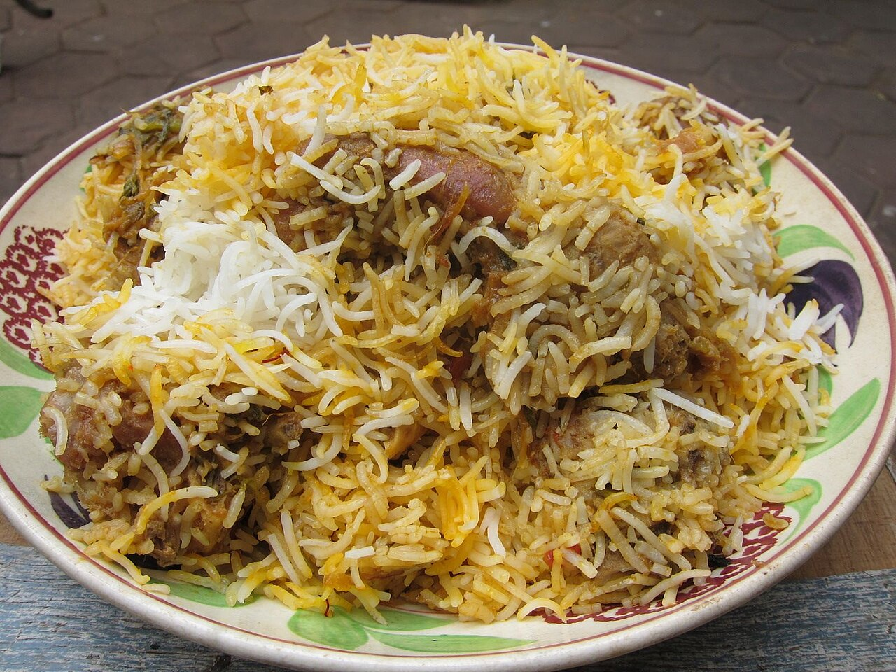
Biryani
Layered rice cooked with spices and meat or vegetables.
Popular in Hyderabad & Lucknow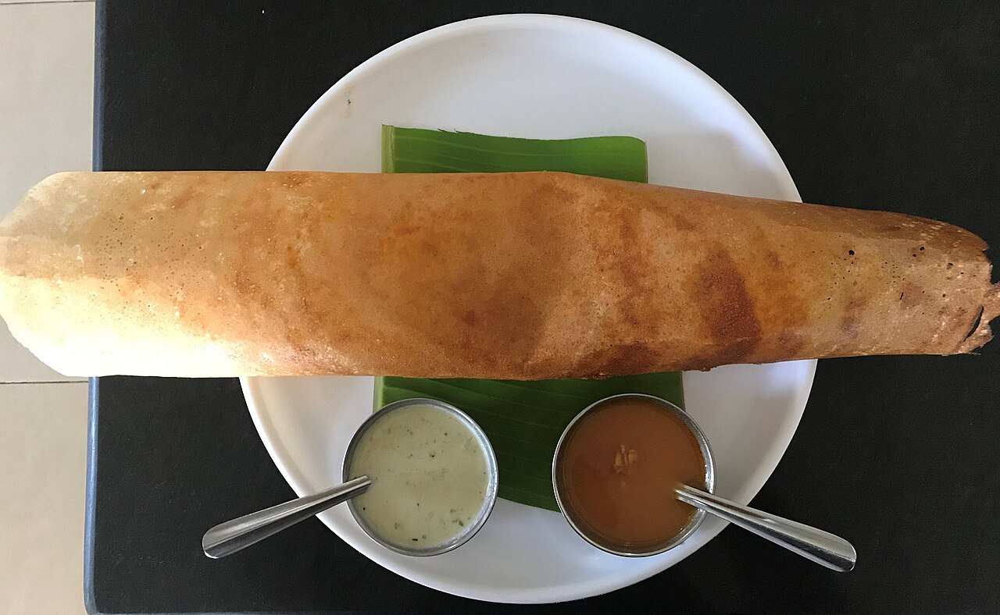
Dosa
A crisp fermented rice and lentil crepe with a savory filling.
Popular in South India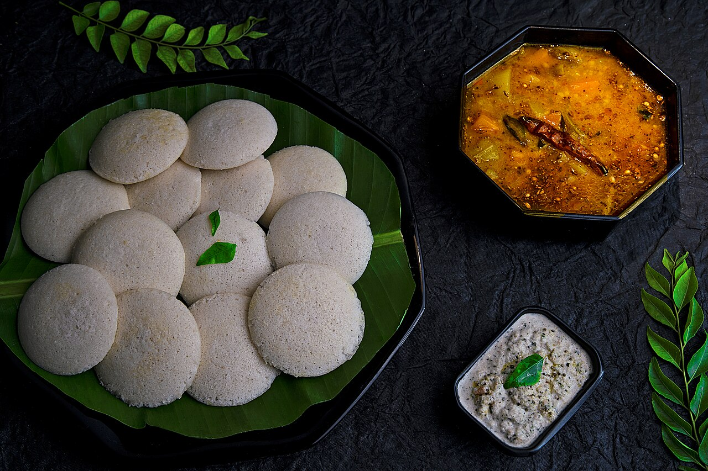
Idli
Soft steamed rice cakes usually served with sambar and chutney.
Popular in Tamil Nadu & Karnataka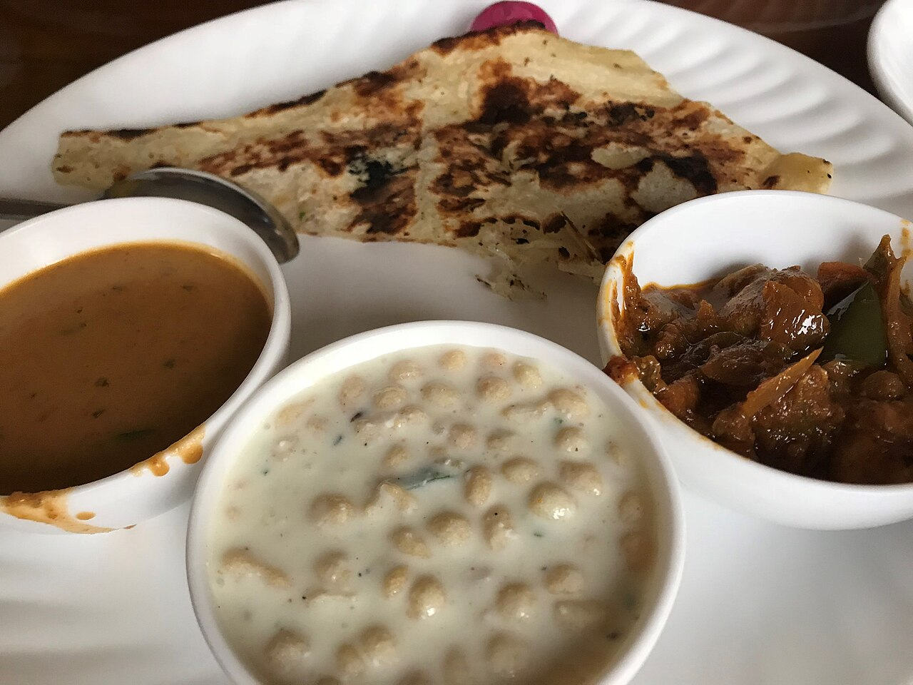
Indian Thali
A balanced platter of breads, rice, vegetables and sweets.
Regional variations across IndiaSamosa
A crisp fried pastry filled with spiced potato and peas.
Popular throughout North IndiaTraditional Dance Forms
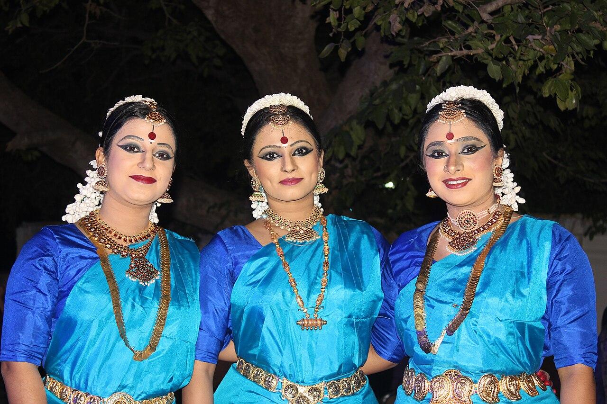
Bharatanatyam
Originating in Tamil Nadu, this dance uses precise gestures, rhythm and expressive storytelling.
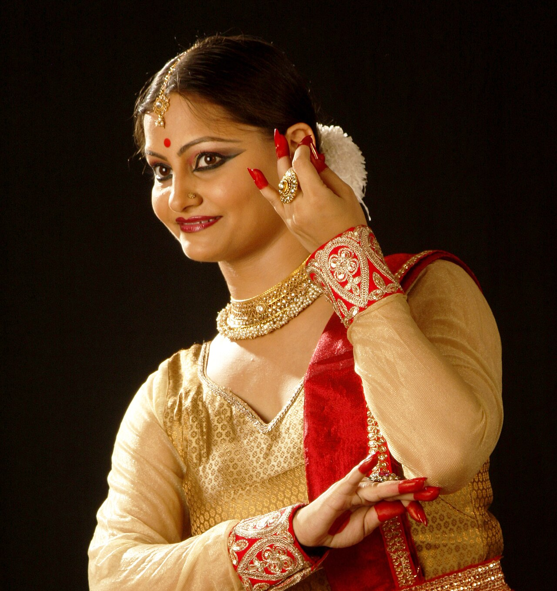
Kathak
From North India, Kathak is known for spins, footwork and graceful storytelling.
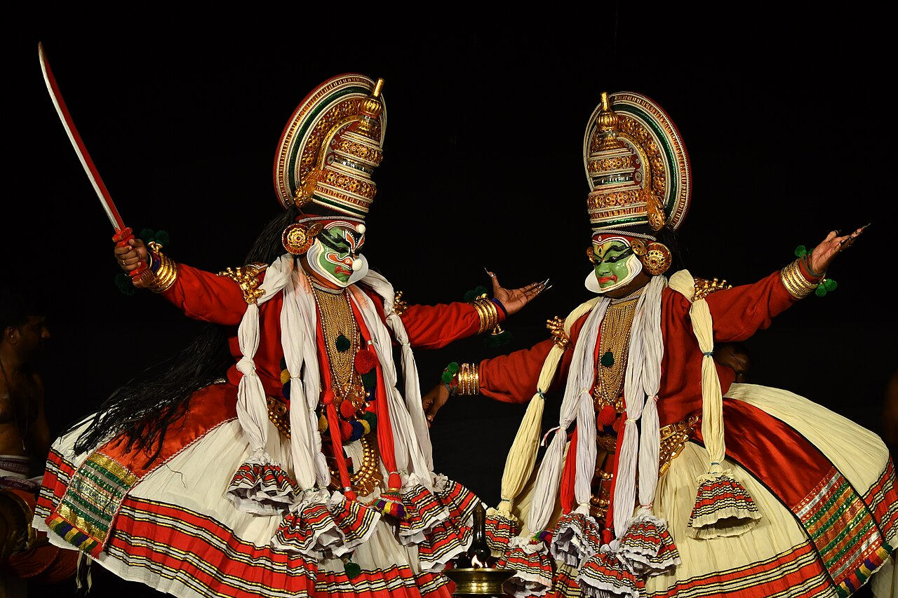
Kathakali
This dramatic dance-drama from Kerala uses elaborate makeup and hand gestures.
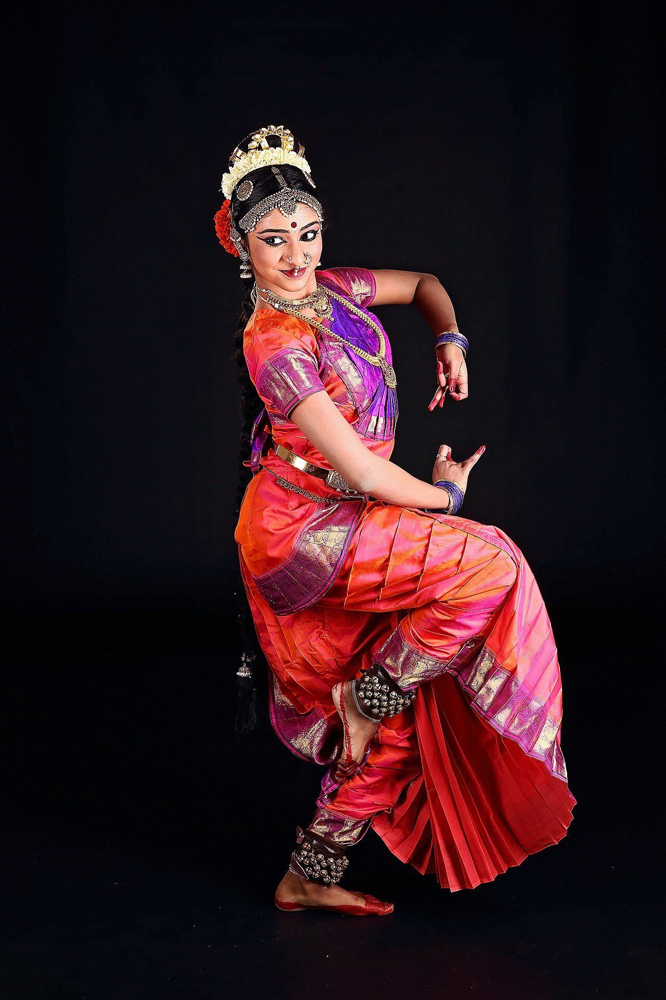
Kuchipudi
Originating in Andhra Pradesh, it combines graceful movement with dramatic narration.
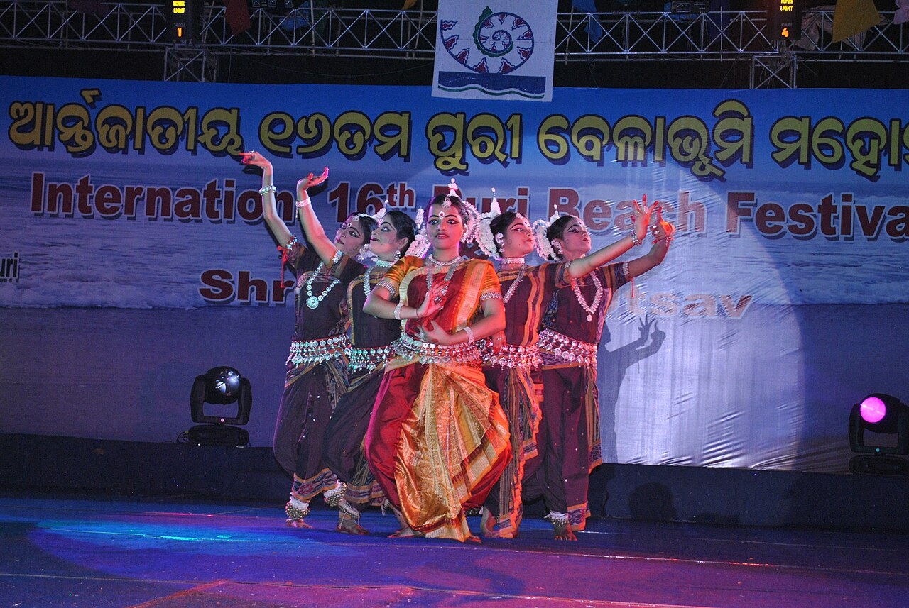
Odissi
This classical dance from Odisha features sculptural poses and devotional themes.
Festivals of India
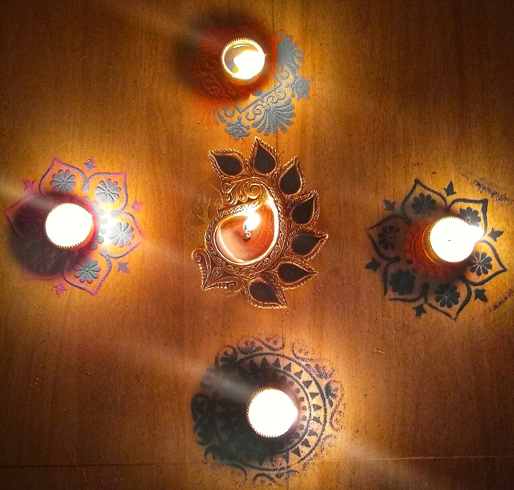
Diwali
Celebrated with lamps, sweets and fireworks, Diwali represents the victory of light over darkness.
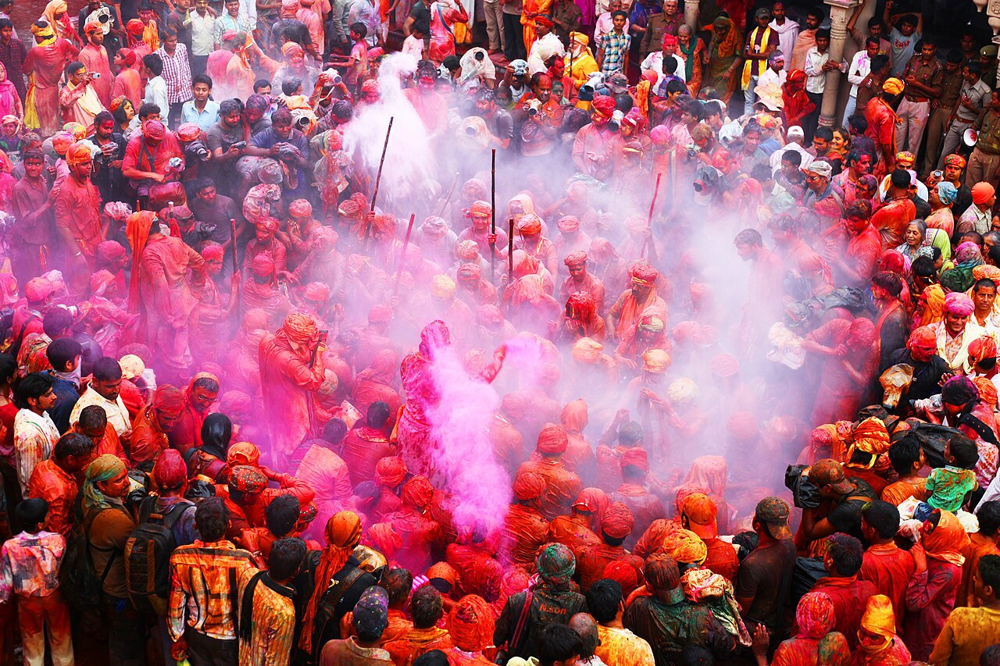
Holi
Holi welcomes spring through color, music and joyful gatherings.
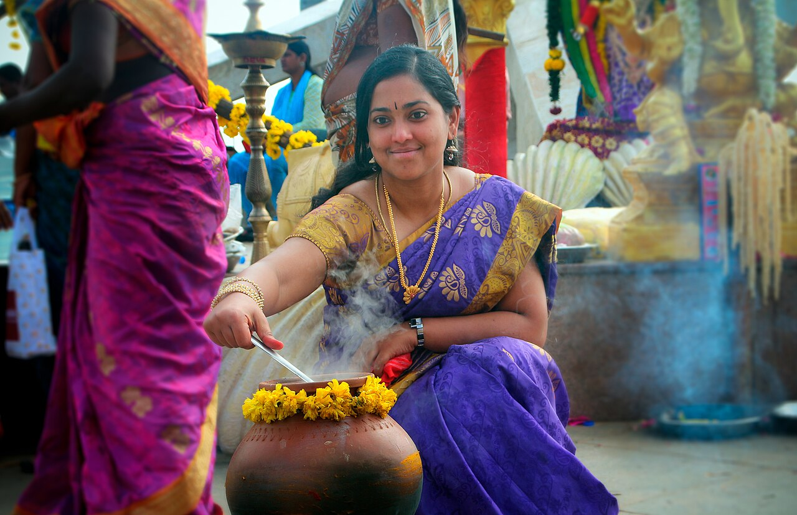
Pongal
A Tamil harvest festival thanking nature and farm animals for abundance.
Onam
Kerala's harvest festival includes flowers, feasts and traditional boat races.
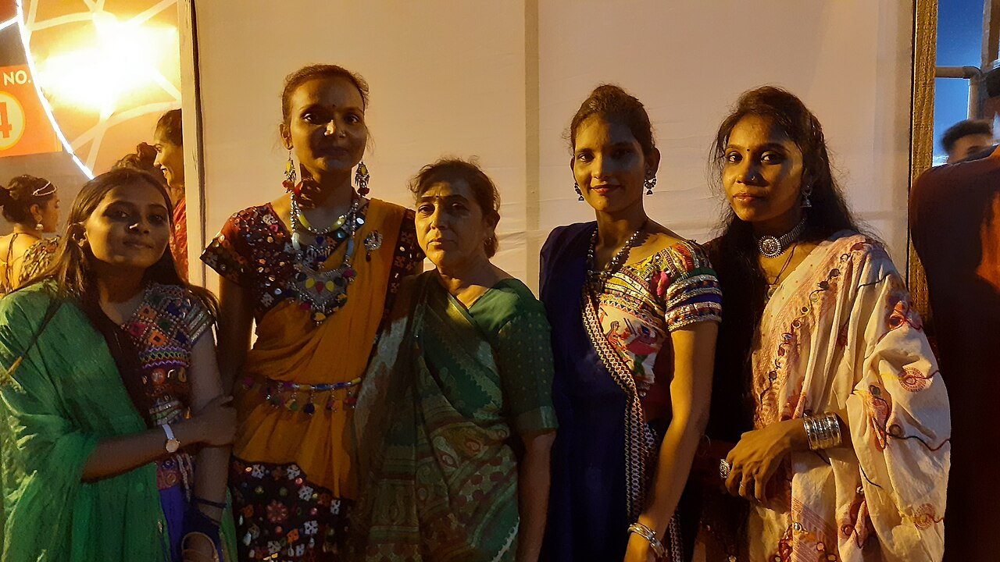
Navratri
This nine-night festival celebrates divine feminine energy through worship and dance.
Indian Music and Traditions
Indian classical music follows melodic ragas and rhythmic talas. Hindustani music developed mainly in northern India, while Carnatic music is associated with the south. Traditional instruments include the sitar, tabla, veena, sarod and flute. Music accompanies festivals, ceremonies and storytelling across the country.
Experience the Beauty of India

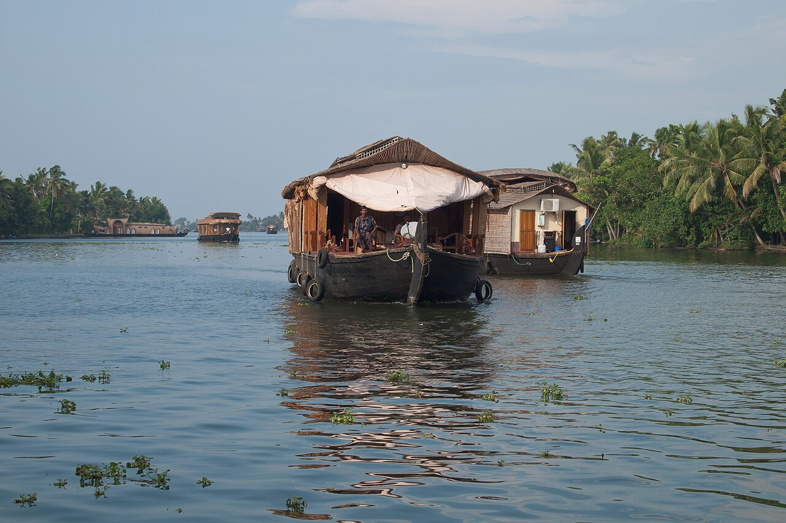

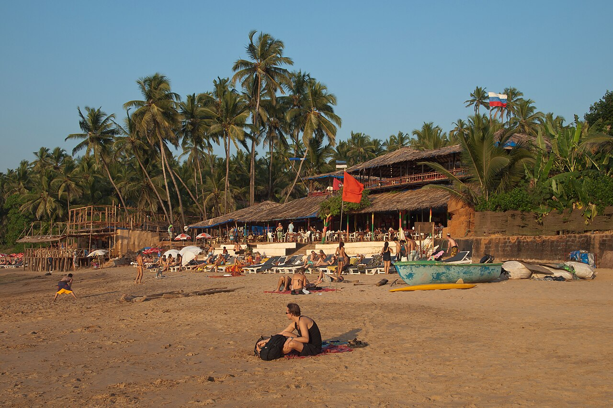

Listen to the Beauty of India
Discover India through a short introduction to its magnificent attractions, diverse traditions and remarkable cultural heritage.
Download India Travel Guide
Download a concise guide with destinations, culture, food, festivals and useful travel tips.
Download India Travel Guide